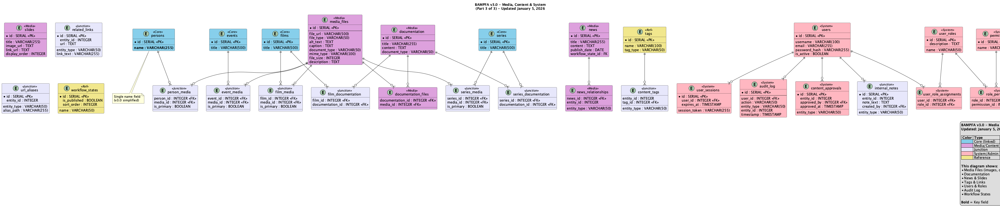
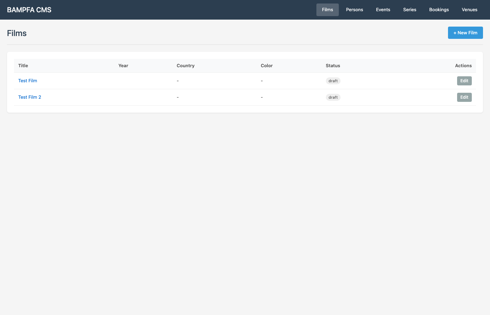
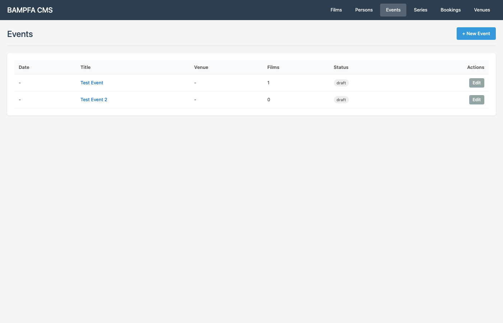

Berkeley Art Museum and Pacific Film Archive - Comprehensive database architecture and CMS modernization replacing outdated Drupal 7 system.
Project Overview
Mission: Modernize BAMPFA's website and database infrastructure, eliminating manual workflows and integrating disconnected databases (FileMaker, CollectionSpace/CineFiles, Tessitura) into a unified, scalable system.
Current Status: ✅ Phase 4 Complete
- Database: PostgreSQL 16 with 53-table optimized schema
- Production: Live at http://134.199.187.48/
- Environment: Digital Ocean (Ubuntu 24.04, 4GB RAM, SFO3)
- Schema: No-migration deployment strategy implemented
- Budget: ~70/100 hours delivered
Key Features Implemented
- ✅ User Management: Role-based permissions, Berkeley email integration
- ✅ Content Workflows: Draft → Review → Approved → Published → Archived
- ✅ Audit Trails: Complete change tracking for compliance
- ✅ Media Management: Centralized file handling with metadata
- ✅ API-Ready: RESTful endpoints for CMS integration
- ✅ Performance: Indexed queries, optimized for large datasets
- ✅ Alias Support: Film and person name variations without duplicates
Database Architecture
Hub-and-spoke schema with entity relationships:
Exhibition/Film Series (1) → (Many) Events/Screenings
↓
Events/Screenings (Many) ← → (Many) Art/Film Objects
↓
Person Entities (Many) ← → (Many) All Content Types (with roles)Data Model Diagram

UI Screenshots
Dashboard

Films Management

Events Management

Current Database Contents
| Content Type | Count | Description |
|---|---|---|
| Films | 6 | Film screenings with full metadata |
| Events | 8 | Workshops, tours, performances, community events |
| Series | 3 | Film series and exhibitions |
| Persons | 10 | Curators, artists, directors, performers |
| Bookings | 2 | Venue reservations |
| Tables | 53 | Optimized schema (31 ERD + 22 operational) |
Technical Architecture
Stack
- Backend: Flask (Python) with Gunicorn
- Database: PostgreSQL 16
- Server: Nginx (reverse proxy)
- Hosting: Digital Ocean (SFO3)
- Deployment: Daily backups enabled
Integration Points
- FileMaker: Legacy art collection database
- CollectionSpace: CineFiles film archive
- Tessitura: Ticketing and events system
Project Phases
| Phase | Status | Description |
|---|---|---|
| Phase 1 | ✅ Complete | Database schema design and implementation |
| Phase 2 | ✅ Complete | Base zero deployment (local + EC2) |
| Phase 3 | ✅ Complete | CMS integration and UI development |
| Phase 4 | ✅ Complete | Production deployment to Digital Ocean |
Tech Stack
PostgreSQL 16
Python
Flask
Nginx
Gunicorn
Digital Ocean
Key Achievements
- 🎯 Unified 3 Legacy Systems: FileMaker, CollectionSpace, Tessitura
- 🚀 53-Table Schema: Consolidated from 55 initial tables
- ⚡ Performance Optimized: Indexed queries for large datasets
- 🔐 Role-Based Access: Berkeley email integration
- 📊 Complete Audit Trails: Full change tracking
- 🎨 Modern UI: Clean, intuitive CMS interface